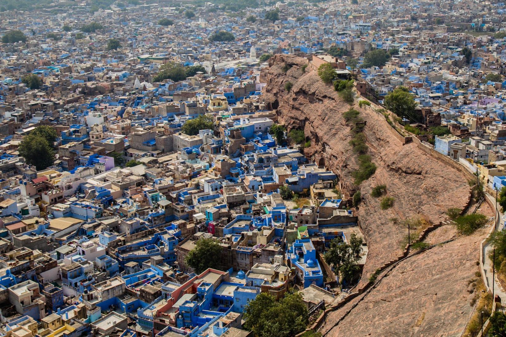

Inde · 10 mois · 13 000 km
Une aventure humaine au guidon de nos motos
Dix mois à moto à la rencontre des populations locales, du Rajasthan au Kerala. Le voyage est devenu un livre de 216 pages et 530 photographies, puis un film.
Le livre et le film →